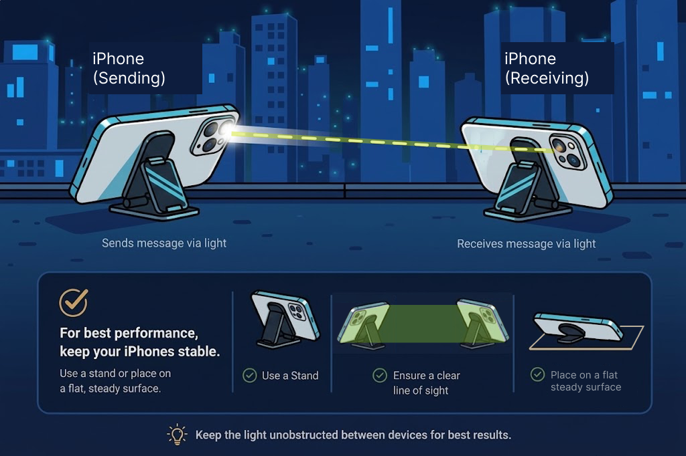

Guide
How to use
Morse Watcher detects flashing-light Morse code and translates it into readable text.
Quick Start
- Open Morse Watcher and allow camera access.
- Point the camera at one steady, clearly visible flashing light.
- Keep the phone still and tap to place the light inside the detection area.
- Wait while the app recognizes the timing of the signal.
- Read the translated message on screen.

Tips for better detection
- Use a bright signal with clear on-and-off flashes.
- Keep the camera and light source steady.
- Adjust the slider to make the detection area smaller so it tightly encloses the flashing light.
Troubleshooting
- Camera does not open: Check camera permission in the device settings.
- Signal is not detected: Keep the phone still. If the sender's speed is known, set it in the Settings menu.
- Translation looks incorrect: Clear the detection area and tap on the flashing light again.
- Detection stops: Confirm the light remains inside the detection area, or check if the sender has stopped flashing.
Settings
- Theme: Color theme for the app's interface.
- Send Speed: Flash speed when sending — match the receiver.
- Detection Speed: Reads the sender's pace. Set to Auto when sender speed is unknown, or set to fast/medium/slow when sender speed is known. (Fast: 100/300/700ms, Medium: 200/600/1400ms, Slow: 400/1200/2800ms).
- Brightness Graph: Toggle the brightness graph on or off.
- Sticky Target: Keeps your aim locked as the phone moves.
- Sound: Toggle app audio on or off.
- Siri Shortcut: Add a quick shortcut to let Siri send flashlight messages for you (located below the Subscription section).
Using Siri
- Quick Setup: In the Morse Watcher settings menu, look below the Subscription section and tap the shortcut prompt to add it.
- Manual Setup: If you previously dismissed the prompt (by hitting the X), you can enable it manually. Open the Apple Shortcuts app on your iPhone, tap + to create a new shortcut, search for Morse Watcher, and add the Send Message action.
- Send a Message: Say "Send a message on Morse Watcher" or "Flash a message with Morse Watcher". Siri will then ask "What message should I flash in Morse?" and "How many times should I flash it?", and then open the app to begin flashing.
- Send SOS: Say "Send SOS on Morse Watcher" or "SOS on Morse Watcher" to immediately flash an SOS signal.